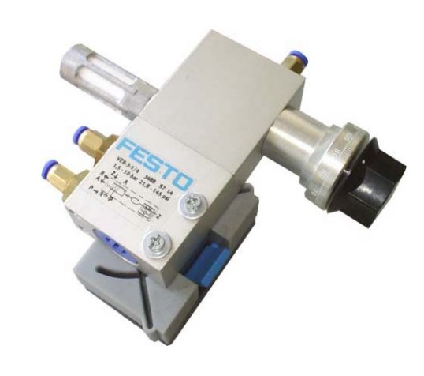
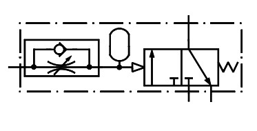
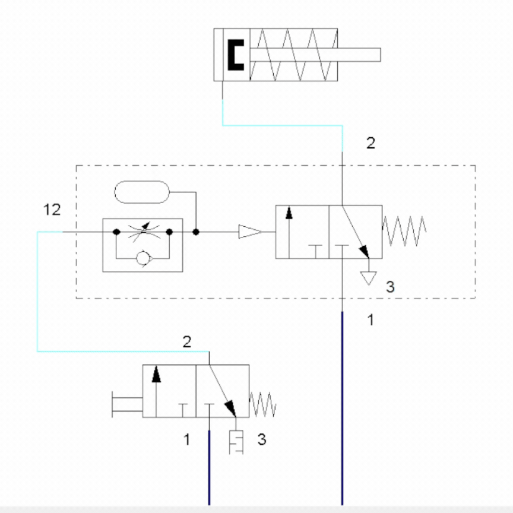

Página Inicial
Componentes Pneumáticos
Válvulas Auxiliares
Válvula Alternadora (Elemento OU)
Válvula de Simultaneidade (Elemento E)
Válvulas Direcionais
Válvula Direcional de 3/2 Vias (Simples Piloto)
Válvula Direcional de 5/2 Vias (Simples Piloto)
Válvula Direcional de 5/2 Vias (Duplo Piloto)
Atuadores
Atuador de Ação Simples
Atuador de Ação Dupla
Outros Componentes Pneumáticos
Reguladora de fluxo unidirecional
Temporizador Pneumático
Contador Pneumático
Temporizador pneumático

Função

Detalhes técnicos:
Diagrama de Funcionamento
